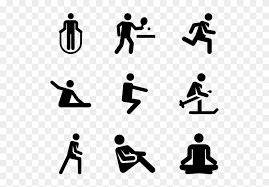

<!DOCTYPE html>
<html lang="en">

<head>
	<meta charset="UTF-8">
	<meta http-equiv="X-UA-Compatible" content="IE=edge">
	<meta name="viewport" content="width=device-width, initial-scale=1.0">
	<title>Handlebars Practice 3 - Custom Helper Functions</title>
	<script src="../handlebars-v4.7.7.js"></script>
</head>

<body>

	<div id="contentDiv"></div>

	<script id="the-template" type="text/x-handlebars-template">

		{{#makeRadio "size"}}
			Small
			Medium
			Large
		{{/makeRadio}}

		{{#areEqual 1 2}}
		Numbers are equal
		{{else}}
		Numbers are not equal
		{{/areEqual}}<br />

		{{#if "isActive"}}
		
		{{else}}
		
		{{/if}}

	</script>

	<script type="text/javascript">
		var templateInfo = document.getElementById("the-template").innerHTML;

		var template = Handlebars.compile(templateInfo);

		Handlebars.registerHelper("makeRadio", function (name, options) {
			var radioList = options.fn();

			radioList = radioList.trim().split("\n");

			var output = "";

			for (var val in radioList) {
				var item = radioList[val].trim();
				output += '<input type="radio" name="' + name + '"value="' +
					item + '">' + item + '<br />';
			}
			return output;
		});

		Handlebars.registerHelper("areEqual", function (num1, num2, options) {
			if (num1 === num2) {
				return options.fn(this);
			} else {
				return options.inverse(this);
			}
		});

		Handlebars.registerHelper("if", function (data, options) {
			if (data === "isActive") {
				return options.fn(this);
			} else {
				return options.inverse(this);
			}
		});

		var templateData = template({});

		document.getElementById("contentDiv").innerHTML += templateData;

	</script>

</body>

</html>